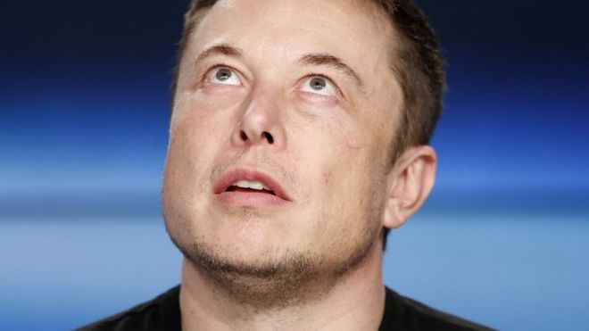

Quem é Elon Musk, o multimilionário fundador da Tesla que enviou seu carro ao espaço!

Desde 06/02/2018, um Tesla vermelho roda no espaço.
Mas não se trata de qualquer carro.
Seu dono é Elon Musk, o famoso bilionário nascido na África do Sul.
Além de fundar a Tesla, empresa especializada em carros elétricos,armazenamento de energia e fabricação de painéis solares, Musk também criou o Paypal (empresa de pagamentos online) e outras bem-sucedidas companhias.
Algumas delas são a Boring Company, pela qual planeja conquistar o subsolo, e a SpaceX, voltada para exploração aeroespacial e responsável pelo recente lançamento do Tesla ao espaço.
"É bobo e engraçado", admitiu depois de lançar seu carro no espaço na semana passada. "Mas as coisas bobas e engraçadas são importantes", acrescentou.
Desde que vendeu a PayPal ao eBay por US$ 1,5 bilhão, há 12 anos, Musk tornou-se para muitos um gênio, para outros um louco e para muitos outros um visionário, um iluminado, um playboy ou um super-herói.